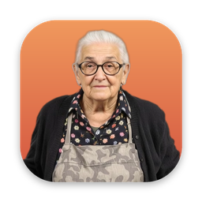

Nonna Star on GitHubKeep your desktop clean. Or a very real Italian grandmother will storm onto your screen, throw her slipper at you, and sweep every file into tidy folders.
Intel Mac? Get the Intel build · All downloads
Click Nonna in the Dock or taskbar. Or let your desktop pile up — she notices on her own.
She storms in and her slipper hits your screen. You had it coming.
Every loose file flies into a folder on your desktop, sorted by kind.
A thumbs up, broom on the shoulder, and off she goes.
Files are only moved into folders on your desktop. Nothing is ever thrown away or overwritten.
Every tidy-up is logged. "Undo last tidy-up" in the Dock menu puts everything back.
She only sorts loose files and apps. Folders you made are left exactly where they are.
Made with an Electron overlay and a nonna generated with AI. Contributions welcome — she'd appreciate the help.
⭐ Star Nonna on GitHub